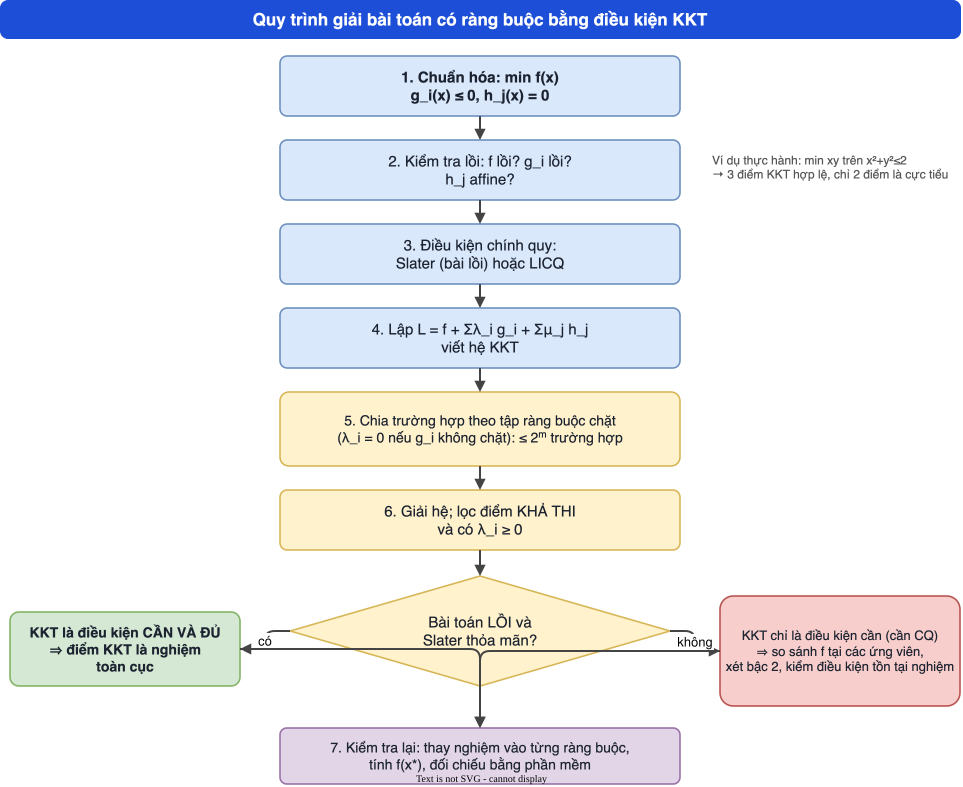

Từ bài toán tối ưu phi tuyến có ràng buộc tổng quát tới điều kiện Karush–Kuhn–Tucker: hàm Lagrange, nhân tử, điều kiện bù, điều kiện chính quy Slater, và khi nào KKT là điều kiện cần và đủ.
Viết bài toán phi tuyến ở dạng chuẩn (\(g_i\le0\), \(h_j=0\)), xác định bài toán lồi và giải thích vì sao \(h_j\) phải affine.
Lập hàm Lagrange, viết đúng hệ KKT (dừng, khả thi, bù, dấu nhân tử) và giải bằng cách chia trường hợp theo tập ràng buộc chặt.
Kiểm tra điều kiện Slater và dùng định lý “cần và đủ” cho bài toán lồi.
Phân biệt điểm KKT với cực tiểu thật sự trong bài toán không lồi (min xy trên đĩa).
Nhận ra khi nào bài toán có nhân tử không duy nhất, nghiệm không duy nhất, và phát hiện chỗ chưa khớp trong ví dụ của slide.
Bài giảng
Dùng phím ← → hoặc các nút để chuyển slide; bấm chấm tròn để nhảy tới slide bất kỳ; “Toàn màn hình” để trình chiếu. Mỗi slide có khung “📖 Giải thích cho người mới bắt đầu” và ảnh gốc trang slide của giảng viên.
MODULE 2 · MỞ ĐẦU
Từ bài toán có ràng buộc tới điều kiện KKT
Module này bám Slide 2 (68 trang, ORLab, 2024): bài toán tối ưu có ràng buộc, điều kiện cần cực trị và điều kiện cần và đủ.
Bài toán phi tuyến tổng quát và bài toán lồi
Các bài toán lồi và ứng dụng
Hàm Lagrange và điều kiện cần KKT
Điều kiện Slater và điều kiện cần và đủ
Bốn ví dụ và câu hỏi thảo luận
Ý tưởng một câu
Tại nghiệm tối ưu, hướng giảm nhanh nhất của f không thể “đẩy” điểm vào miền khả thi được nữa: \(-\nabla f\) bị các gradient ràng buộc chặt “chặn lại”. Nhân tử Lagrange đo mức độ chặn đó.
Slide gốc, trang 1 — bấm để phóng to📖 Giải thích cho người mới bắt đầu
Ở Module 1 ta học cách nhận ra hàm/tập lồi. Bây giờ ta dùng chúng để giải bài toán có ràng buộc \(g_i(x)\le0\), \(h_j(x)=0\).
Slide gốc, trang 37 — bấm để phóng to📖 Giải thích cho người mới bắt đầu
Mọi bài toán tối ưu “có điều kiện” đều đưa được về dạng này: mục tiêu là làm nhỏ f, điều kiện là “nằm trong C”. Ràng buộc \(g\ge0\) đổi thành \(-g\le0\); bài toán max đổi thành min của \(-f\).
Chú ý ký hiệu: slide dùng \(n\) cho số ràng buộc bất đẳng thức ở tr.4 và \(m\) ở tr.17; khi đọc hãy hiểu đó là số phần tử của \(I\).
MODULE 2 · PHẦN 1
Bài toán tối ưu lồi
Dạng tập
\[\min_{x\in C} f(x)\]
Hàm mục tiêu f: lồi
Tập chấp nhận được C: lồi
Cực tiểu (nghiệm) địa phương cũng là cực tiểu (nghiệm) toàn cục
Slide gốc, trang 11 — bấm để phóng to📖 Giải thích cho người mới bắt đầu
Đây là “phần thưởng” của tính lồi: không cần lo mắc kẹt ở cực tiểu địa phương. Bằng chứng ngắn: nếu \(x\) là cực tiểu địa phương nhưng có \(y\in C\) với \(f(y)\lt f(x)\), thì các điểm \(z_t=(1-t)x+ty\in C\) khi \(t\to0\) có \(f(z_t)\le(1-t)f(x)+tf(y)\lt f(x)\), mâu thuẫn với tính cực tiểu địa phương.
\(h_j(x)=0\) tương đương \(h_j\le0\) và \(-h_j\le0\). Tập \(\{h\le0\}\) lồi khi h lồi; \(\{-h\le0\}\) lồi khi \(-h\) lồi. Muốn dùng được cả hai, h phải vừa lồi vừa lõm, tức h là hàm affine: \(h(x)=a^\top x+b\).
Slide gốc, trang 16 — bấm để phóng to📖 Giải thích cho người mới bắt đầu
Slide đặt câu hỏi “(Giải thích!!)” ngay chỗ này. Ví dụ \(h(x)=x_1^2+x_2^2-1=0\) (đường tròn) không affine, và tập đường tròn không lồi: nối hai điểm đối xứng trên đường tròn được đoạn đi qua tâm, nằm ngoài đường tròn.
MODULE 2 · PHẦN 2/5
02
Các bài toán lồi và ứng dụng
Danh sách các lớp bài toán lồi
Ứng dụng trong thực tế
LP và QP lồi
MODULE 2 · PHẦN 2
Các bài toán lồi hoặc đưa được về lồi
Least squares (bình phương tối thiểu)
Linear programming (quy hoạch tuyến tính)
Convex quadratic minimization with linear constraints
Quadratic minimization with convex quadratic constraints
Slide gốc, trang 24 — bấm để phóng to📖 Giải thích cho người mới bắt đầu
Đây là “bản đồ” các bài toán lồi từ đơn giản (LP) đến tổng quát (SDP). Mỗi lớp là trường hợp riêng của lớp sau: LP ⊂ QP lồi ⊂ QCQP ⊂ SOCP ⊂ SDP. Bạn đã gặp LP trong môn Quy hoạch tuyến tính; Module 3 nghiên cứu QP.
Slide gốc, trang 29 — bấm để phóng to📖 Giải thích cho người mới bắt đầu
Mỗi ứng dụng đều quy về “tối thiểu hóa một hàm lồi trong một tập lồi”. Case study bên dưới giải một bài toán danh mục đầu tư (portfolio) cụ thể bằng KKT.
Slide gốc, trang 68 — bấm để phóng to📖 Giải thích cho người mới bắt đầu
Hai bài toán này chỉ khác nhau ở hàm mục tiêu: tuyến tính hay toàn phương lồi (\(P\succeq0\)). Trong QP lồi, miền chấp nhận vẫn là polyhedron. Module 3 giải QP bằng null space và active set.
Slide gốc, trang 38 — bấm để phóng to📖 Giải thích cho người mới bắt đầu
Ý tưởng “phạt”: cộng vào f một khoản phạt \(\lambda_ig_i\) khi vi phạm ràng buộc. Nhân tử \(\lambda_i\ge0\) sao cho khoản phạt đẩy nghiệm về phía khả thi (khi \(g_i\gt 0\) thì \(\lambda_ig_i\gt 0\) làm L tăng).
MODULE 2 · PHẦN 3
Định lý: điều kiện cần cực trị
Nếu \(x^*\) là nghiệm tối ưu của (P) thì tồn tại \(\lambda_i\ (i\in I)\), \(\mu_j\ (j\in J)\) sao cho:
Slide phát biểu gọn; định lý “cần” đúng khi có điều kiện chính quy (Slater cho bài lồi, hoặc LICQ/MFCQ nói chung). Ví dụ \(\min x\) s.t. \(x^2\le0\): nghiệm \(x^*=0\) nhưng không tồn tại \(\lambda\).
Slide gốc, trang 40 — bấm để phóng to📖 Giải thích cho người mới bắt đầu
Bốn dòng của hệ: (1) đạo hàm của L theo x bằng 0; (2) điều kiện bù: mỗi tích \(\lambda_ig_i\) bằng 0 (hoặc ràng buộc chặt, hoặc nhân tử bằng 0); (3) điểm phải khả thi; (4) \(\lambda_i\ge0\).
MODULE 2 · PHẦN 3
Ý nghĩa từng thành phần
\(g_i(x^*)\le0,\ h_j(x^*)=0\): \(x^*\) là điểm chấp nhận được.
\(\lambda_ig_i(x^*)=0\): điều kiện bù (complementary slackness).
\(\lambda_i,\mu_j\): các nhân tử Lagrange.
Điểm \(x^*\) thỏa hệ (1) gọi là điểm KKT (điểm dừng KKT).
Slide gốc, trang 43 — bấm để phóng to📖 Giải thích cho người mới bắt đầu
Điều kiện bù chia bài toán thành các “trường hợp”: mỗi ràng buộc \(g_i\) hoặc chặt (nằm sát biên) hoặc lỏng (nhân tử bằng 0). Với m ràng buộc bất đẳng thức có tối đa \(2^m\) trường hợp cần xét.
Với \(\lambda_i\ge0\): vectơ \(-\nabla f(x^*)\) nằm trong nón sinh bởi các gradient \(\nabla g_i\) của các ràng buộc chặt. Không thể giảm f mà vẫn khả thi.
Thử ngay ở “Phòng thí nghiệm KKT” bên dưới: mũi tên đỏ (∇f) phải ngược hướng với các mũi tên xanh (∇g) tại điểm KKT.
📖 Giải thích cho người mới bắt đầu
Ví dụ trực giác: bóng lăn xuống dốc (hướng \(-\nabla f\)) trong một cái sân bị tường bao quanh. Nó dừng ở chân tường khi lực đẩy của tường (\(\lambda\nabla g\)) cân bằng với lực kéo xuống dốc. Tường càng phải “đỡ” mạnh thì nhân tử \(\lambda\) càng lớn.
MODULE 2 · PHẦN 4/5
04
Điều kiện Slater và điều kiện cần và đủ
Điều kiện chính quy Slater
Khi Slater không thỏa mãn
Định lý cần và đủ cho bài toán lồi
MODULE 2 · PHẦN 4
Điều kiện chính quy Slater
Slater (CQ)Bài toán (P) thỏa Slater nếu tồn tại \(z\in C\) với \(g_i(z)\lt 0\ \ \forall i=1,\dots,m\).
Nghĩa là tồn tại điểm khả thi thỏa chặt mọi ràng buộc bất đẳng thức (điểm “trong” của miền). Với ràng buộc đẳng thức affine chỉ cần điểm đó thuộc miền.
Slater bảo đảm đối ngẫu mạnh cho bài toán lồi (Boyd).
Slide gốc, trang 47 — bấm để phóng to📖 Giải thích cho người mới bắt đầu
Kiểm tra Slater rất đơn giản: tìm một điểm khả thi làm cho mọi bất đẳng thức là bất đẳng thức chặt. Ví dụ miền \(x^2+y^2\le4\), \(x+y\ge2\) có điểm \((1.2,1.2)\) làm cả hai chặt, nên thỏa Slater.
MODULE 2 · PHẦN 4
Khi Slater không thỏa mãn
Slide tr.48 minh họa hai tình huống miền không có điểm trong: (a) không đủ hạng dòng (ràng buộc suy biến), (b) miền không có điểm trong (chỉ có biên).
Ví dụ (b): \(\{x\mid x^2\le0\}=\{0\}\) — mọi điểm khả thi làm \(g=0\), không có điểm nào \(g\lt 0\).
Hệ quả: KKT có thể không là điều kiện cần (\(\min x\) s.t. \(x^2\le0\)).
Slide gốc, trang 48 — bấm để phóng to📖 Giải thích cho người mới bắt đầu
Hai hình trong slide: bên trái là hai vùng tròn chạm nhau tại điểm hoặc cạnh; bên phải là miền hình parabol, điểm z nằm ngoài. Hình dung “Slater fail” là khi miền khả thi quá mỏng (không có “ruột”).
MODULE 2 · PHẦN 4
Định lý điều kiện cần và đủ
Giả sử bài toán (P) lồi, Slater thỏa mãn, \(x^*\) khả thi. Khi đó:
Slide gốc, trang 52 — bấm để phóng to📖 Giải thích cho người mới bắt đầu
Chiều “⇐” (đủ) là chiều quan trọng khi giải bài: tìm ra một điểm KKT là đã tìm ra nghiệm tối ưu. Chiều “⇒” (cần) cho phép ta chắc chắn khi có nghiệm thì nó nằm trong tập điểm KKT nên liệt kê hết các điểm KKT sẽ không bỏ sót.
MODULE 2 · TỔNG KẾT
Quy trình giải bằng KKT

Bài không lồi: KKT chỉ cho ứng viên; phải so sánh giá trị f hoặc xét điều kiện bậc hai.
📖 Giải thích cho người mới bắt đầu
Sơ đồ tóm tắt 7 bước. Bước 5 (chia trường hợp theo ràng buộc chặt) là bước tốn công nhất; bước 7 (thay lại kiểm tra) giúp tránh sai sót số học.
MODULE 2 · PHẦN 5/5
05
Bốn ví dụ và câu hỏi thảo luận
Ví dụ 1: bài toán lồi có ràng buộc đẳng thức
Ví dụ 2: max hàm lồi (bài không lồi)
Ví dụ 3: \(\min xy\) trên đĩa
Ví dụ 4: LP
MODULE 2 · PHẦN 5
Ví dụ 1: bài toán lồi, nhân tử (0, 1)
Cực tiểu \(f(x,y)=(x-1)^2+y-2\) với \(x+y-2\le0\), \(x-y+1=0\).
Điều kiện Slater thỏa (điểm \((0,1)\): \(g=-1\lt 0\), \(h=0\)).
Điểm dừng \((x^*,y^*)=(1/2,3/2)\) là nghiệm ứng với \((\lambda,\mu)=(0,1)\).
Slide gốc, trang 55 — bấm để phóng to📖 Giải thích cho người mới bắt đầu
Ràng buộc \(g_1=x+y-2\le0\) chặt tại nghiệm nhưng \(\lambda=0\) (suy biến bù). Chỉ ràng buộc đẳng thức thật sự “đỡ” nghiệm: \(\nabla f=(-1,1)\) song song với \(\nabla h=(1,-1)\).
MODULE 2 · PHẦN 5
Chú ý: bài không lồi
Với bài toán tối ưu không lồi, điểm KKT có thể không là điểm cực tiểu địa phương.
Điều kiện đủ của KKT (Module 3 và 2) đòi hỏi tính lồi; nếu không lồi, KKT chỉ là điều kiện cần (khi có CQ).
Slide gốc, trang 56 — bấm để phóng to📖 Giải thích cho người mới bắt đầu
Ví dụ 3 (min xy trên đĩa) cho thấy điều này: điểm \((0,0)\) là điểm KKT nhưng là điểm yên ngựa, không phải cực tiểu.
MODULE 2 · PHẦN 5
Ví dụ 2: max hàm lồi trên tập ràng buộc
Bài toán: \(\max\ f=x^2+y^2+4x-6y\) với \(x+y\le3\), \(-2x+y\le2\); chuyển sang cực tiểu \(-f\) (không lồi). Slide nêu điểm KKT \((1/3,8/3)\).
Kiểm chứng bằng code
Tại \((1/3,8/3)\), hai ràng buộc cùng chặt và giải \(\nabla(-f)+\lambda_1\nabla g_1+\lambda_2\nabla g_2=0\) cho \(\lambda=(10/9,\,-16/9)\): có nhân tử âm nên không phải điểm KKT. Xem trang “Kiểm chứng” và ví dụ chi tiết bên dưới.
Slide gốc, trang 59 — bấm để phóng to📖 Giải thích cho người mới bắt đầu
Đây là chỗ nên hỏi lại giảng viên: có thể đề đúng là cực tiểu \(f\) (khi đó điểm KKT là \((0,2)\), \(\lambda=(0,2)\)), hoặc ràng buộc khác. Phương pháp giải (liệt kê các trường hợp chặt và kiểm dấu nhân tử) thì luôn đúng.
MODULE 2 · PHẦN 5
Ví dụ 3: \(\min xy\) trên đĩa \(x^2+y^2\le2\)
Ba điểm KKT hợp lệ: \((0,0)\) với \(\lambda=0\); \((1,-1)\) và \((-1,1)\) với \(\lambda=\tfrac12\).
Loại: \((1,1)\) và \((-1,-1)\) vì \(\lambda=-\tfrac12\lt 0\).
\(f(0,0)=0\); \(f(1,-1)=f(-1,1)=-1\) ⇒ hai điểm sau là cực tiểu toàn cục (miền compact nên tồn tại nghiệm).
\((0,0)\) là điểm yên ngựa: dọc \((t,-t)\), \(f=-t^2\lt 0\).
Slide gốc, trang 60 — bấm để phóng to📖 Giải thích cho người mới bắt đầu
Hàm \(xy\) không lồi (Hessian \(\begin{pmatrix}0&1\\1&0\end{pmatrix}\) không xác định), nên KKT chỉ cho ứng viên. Miền là hình tròn đóng (bị chặn), nên nghiệm tồn tại (định lý Weierstrass) và ta chọn ứng viên có f nhỏ nhất.
MODULE 2 · PHẦN 5
Ví dụ 4: quy hoạch tuyến tính
\(\min f=2x+y\) với \(3x+y\le6\), \(x+y\le4\), \(x\ge0\), \(y\ge0\).
Đây là LP (bài toán lồi, Slater thỏa: \((0.5,0.5)\) làm cả 4 bất đẳng thức chặt). Nghiệm \((0,0)\); KKT: \(\nabla f=(2,1)\), \(\lambda_3=2\), \(\lambda_4=1\) (ràng buộc \(-x\le0\), \(-y\le0\)).
Nếu đề là max \(2x+y\): tối ưu tại \((1,3)\) với giá trị 5.
Slide gốc, trang 61 — bấm để phóng to📖 Giải thích cho người mới bắt đầu
KKT của LP chính là điều kiện tối ưu của thuật toán đơn hình dưới dạng đối ngẫu: \(\lambda\) là biến đối ngẫu (giá bóng). Đây là chỗ nối trực tiếp với môn Quy hoạch tuyến tính.
Miền lồi không thỏa Slater: \(\{x\mid x^2\le0\}=\{0\}\).
Cặp nhân tử \((\lambda,\mu)\) có duy nhất? Không nhất thiết (ví dụ ràng buộc trùng lặp hoặc gradient phụ thuộc tuyến tính); duy nhất khi các \(\nabla g_i,\nabla h_j\) của ràng buộc chặt độc lập tuyến tính (LICQ).
Khi nào có duy nhất nghiệm? Ví dụ f lồi chặt.
Có thể có hai nghiệm? Không đúng hai: nếu \(x_1\ne x_2\) đều tối ưu thì cả đoạn nối cũng tối ưu (vô số).
Tập nghiệm: là tập lồi (và đóng).
Slide gốc, trang 66 — bấm để phóng to📖 Giải thích cho người mới bắt đầu
Năm câu này ôn lại các hệ quả của tính lồi. Chứng minh câu 4: nếu \(f(x_1)=f(x_2)=f^*\) thì \(f((x_1+x_2)/2)\le f^*\) và cũng \(\ge f^*\) vì \(f^*\) là cực tiểu ⇒ điểm giữa cũng tối ưu; tương tự mọi điểm trên đoạn.
Phương pháp nhân tử cho ràng buộc đẳng thức thuộc về Joseph-Louis Lagrange (khuôn khổ cơ học giải tích, Mécanique analytique, 1788). Mở rộng cho ràng buộc bất đẳng thức là điều kiện Karush–Kuhn–Tucker: William Karush trình bày trong luận văn thạc sĩ năm 1939; Harold Kuhn và Albert Tucker công bố độc lập năm 1951 và làm cho kết quả nổi tiếng trong quy hoạch phi tuyến.
Điều kiện chính quy Slater mang tên Morton Slater (1950). Trong lý thuyết đối ngẫu lồi, Slater bảo đảm không có khoảng cách đối ngẫu, nên hệ KKT là cần và đủ (Boyd & Vandenberghe, mục 5.5).
🔎 Case study: danh mục đầu tư phương sai nhỏ nhất
Bài toán danh mục đầu tư phương sai nhỏ nhất, không bán khống (Markowitz đơn giản hóa): chọn tỉ trọng \(w\in\mathbb R^3\) của ba tài sản để cực tiểu rủi ro (phương sai) \(f(w)=w^\top\Sigma w\) với \(\mathbf 1^\top w=1\), \(w\ge0\).
Độ lệch chuẩn \(\sigma=(10\%,15\%,20\%)\), tương quan \(\rho_{12}=0.8,\ \rho_{13}=0.2,\ \rho_{23}=0.9\). Ma trận hiệp phương sai \(\Sigma=\mathrm{diag}(\sigma)\,\mathrm{corr}\,\mathrm{diag}(\sigma)\):
Nếu bỏ ràng buộc \(w\ge0\) (chỉ giữ tổng bằng 1): \(w\propto\Sigma^{-1}\mathbf1\) cho \(w=(-0.3929, 2.5, -1.1071)\) — có tỉ trọng âm nên vi phạm \(w\ge0\).
Thử tập chặt \(\{w_2=0\}\): giải trên tài sản 1, 3: \(w_{1,3}\propto\Sigma_{\{1,3\}}^{-1}\mathbf1\) ⇒ \(w^*=(0.8571, 0, 0.1429)\) (tức \(6/7,\ 0,\ 1/7\)), rủi ro \(w^{*\top}\Sigma w^*=0.009143\) (độ lệch chuẩn \(9.5618\%\)).
Nhân tử: \(\mu=2w^{*\top}\Sigma w^*=0.018286\) và \(\lambda_2=2(\Sigma w^*)_2-\mu=0.01\ge0\) ✓. Các nhân tử \(\lambda_1=\lambda_3=0\) vì \(w_1,w_3\gt 0\). Mọi điều kiện KKT thỏa ⇒ do bài lồi + Slater, \(w^*\) là nghiệm tối ưu toàn cục.
Điều học được
Tài sản 2 (rủi ro trung bình, tương quan cao với tài sản 3) bị loại khỏi danh mục: nhân tử \(\lambda_2\gt 0\) đo “giá” của việc bị ép bằng 0 (rủi ro sẽ giảm thêm một chút nếu được phép bán khống).
Ví dụ chi tiết (có lời giải từng bước)
Bấm từng ví dụ để mở lời giải. Mọi số liệu được kiểm bằng sympy/scipy.
Ví dụ 1 (slide tr.55) — giải đầy đủ
Đặt \(g(x,y)=x+y-2\le0\), \(h(x,y)=x-y+1=0\). \(f\) lồi (tổng của bình phương lồi và hàm tuyến tính), \(g,h\) affine ⇒ bài toán lồi.
Slater: \((0,1)\) có \(h=0\), \(g=-1\lt 0\) ✓ ⇒ KKT là cần và đủ.
Trường hợp \(g\) không chặt (\(\lambda=0\)): \(\mu=1\), \(x=1/2\); từ \(h=0\): \(y=3/2\). Kiểm \(g=1/2+3/2-2=0\) — thực ra chặt, nhưng \(\lambda=0\) vẫn thỏa bù. Khả thi ✓, \(\lambda=0\ge0\) ✓.
Kết luận (sympy + SLSQP): \((x^*,y^*)=(1/2,3/2)\), \((\lambda,\mu)=(0,1)\), \(f^*=-0.25\).
Ví dụ 3 (slide tr.60) — \(\min xy\) trên đĩa: chia trường hợp
Hessian của L tại \(\lambda=1/2\): \(\begin{pmatrix}1&1\\1&1\end{pmatrix}\succeq0\); tại \(\lambda=0\): \(\begin{pmatrix}0&1\\1&0\end{pmatrix}\) không xác định ⇒ \((0,0)\) là yên ngựa.
Miền compact ⇒ nghiệm tồn tại; so sánh giá trị: \(f=-1\lt 0\). Kết luận: cực tiểu toàn cục tại \((1,-1)\) và \((-1,1)\), \(f^*=-1\).
LP lồi, Slater ✓ ⇒ \((0,0)\) là nghiệm; \(f^*=0\). Kiểm bằng linprog.
Biến thể max: nghiệm \((1,3)\), giá trị 5 (giao của \(3x+y=6\) và \(x+y=4\)).
Ví dụ 2 (slide tr.57/59) — kiểm chứng: không có điểm KKT nào
Bài toán \(\min F=-(x^2+y^2+4x-6y)\) với \(g_1=x+y-3\le0\), \(g_2=-2x+y-2\le0\). Liệt kê 4 tập chặt:
Tập chặt
Nghiệm
Khả thi
λ ≥ 0
[]
l1=0, l2=0, x=-2, y=3
không
không
[1]
l1=2, l2=0, x=-1, y=4
không
không
[2]
l1=0, l2=-2, x=0, y=2
có
không
[1, 2]
l1=10/9, l2=-16/9, x=1/3, y=8/3
có
không
Không tập nào cho điểm KKT (điểm \((1/3,8/3)\) có \(\lambda_2=-16/9\lt 0\)). Điều này khớp với việc \(\max f\) không bị chặn trên miền (miền không bị chặn, f→∞). Nếu bài là cực tiểu \(f\) (lồi) thì điểm KKT là \((0,2)\), \(\lambda=(0,2)\), \(f^*=-8\).
Phản ví dụ — KKT không là điều kiện cần khi thiếu Slater
\(\min x\) s.t. \(x^2\le0\). Miền khả thi \(\{0\}\) nên \(x^*=0\) là nghiệm. Dừng: \(1+2\lambda x^*=1+0=1\ne0\) với mọi \(\lambda\) ⇒ không có nhân tử. Slater vi phạm (không có z với \(z^2\lt 0\)); \(\nabla g(x^*)=0\) cũng vi phạm LICQ.
Kết luận: \(x^*=(1/16,7/8)\), \(f^*=-33/32=-1.03125\).
Sơ đồ tổng hợp
Quy trình giải bài toán có ràng buộc bằng KKT (drawio)Các lớp bài toán tối ưu
Thực hành tương tác
Cảnh báo bẫy diễn giải sai
Bẫy 1 — Dấu của nhân tử
Với dạng \(g_i\le0\) và \(L=f+\sum\lambda_ig_i\), yêu cầu là \(\lambda_i\ge0\). Nếu viết ràng buộc dạng \(g\ge0\) hoặc dùng \(L=f-\sum\lambda g\) thì dấu thay đổi; luôn chuẩn hóa về \(g\le0\) trước.
Bẫy 2 — KKT không lồi chưa phải nghiệm
\(\min xy\) trên đĩa có điểm KKT \((0,0)\) là yên ngựa. Bài không lồi: so sánh các ứng viên và kiểm tồn tại nghiệm.
Bẫy 3 — Ràng buộc chặt mà \(\lambda=0\)
Ví dụ 1: \(g\) chặt nhưng \(\lambda=0\). Điều kiện bù cho phép điều này (suy biến bù), không mâu thuẫn.
Bẫy 4 — Quên kiểm khả thi và dấu
Sau khi giải hệ dừng + bù, phải kiểm tra khả thi gốc (\(g\le0\)) và \(\lambda\ge0\); nhiều nghiệm của hệ phương trình bị loại ở bước này (ví dụ \((1,1)\) trong ví dụ 3).
Bẫy 5 — Slater ≠ “miền có điểm trong” nói chung
Slater cần điểm khả thi làm mọi bất đẳng thức chặt và thỏa đẳng thức affine; miền chỉ gồm biên (\(x^2\le0\)) không thỏa.
Ngân hàng câu hỏi (157 câu)
Gồm 129 câu trắc nghiệm (gồm 52 câu đúng/sai), 18 câu điền số và 10 câu tự luận có đáp án mẫu. Bấm một đáp án là biết đúng/sai ngay và có giải thích; mỗi câu có nút “↺ Làm lại câu này”, cuối bài có “↺ Làm lại toàn bộ bài”. Mỗi câu gắn nhãn nguồn: từ slide · tham khảo · biên soạn thêm.
Nội dung bám sát slide của ORLab (Phenikaa) và giáo trình Boyd & Vandenberghe. Mọi con số được sinh từ script kiểm chứng (thư mục NLP-work/verify trong dự án).